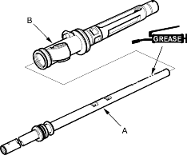
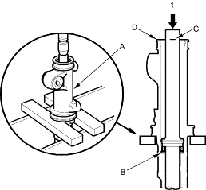
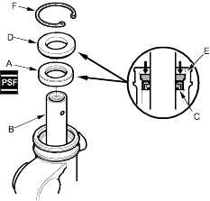
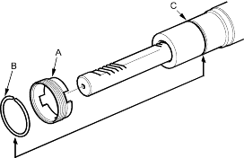

- Grease the steering rack teeth, then insert the steering rack (A) into the cylinder (B). Be careful not to damage to inner surface of the cylinder wall and bushing with the rack edges.

- Set the cylinder (A) in a press, then press the cylinder end seal (B) into the bottom of the cylinder until the mark (C) on the rack meets the edges (D) of the cylinder.

- Coat the inside and outside surfaces of the new cylinder end seal (A) with power steering fluid.

- Install the cylinder end seal onto the steering rack (B) with its grooved side (C) toward the piston. Push in the cylinder end seal with your finger.
- Place the backup ring (D) on the cylinder end seal with its flat side facing upward. Then drive the backup ring in with the appropriate size socket wrench until its surface is below the circlip groove (E). Install the snap ring (F) in the groove.
- Install the new lock screw (A) on the cylinder.

- Install the new stop ring (B) in the groove (C) on the cylinder by expanding it with snap ring pliers. Be careful not to scratch or damage on the cylinder surface with the stop ring edges.